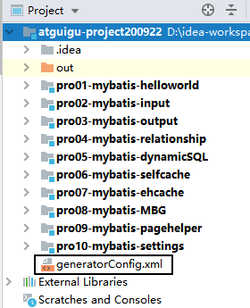

一、缓存1、缓存机制介绍2、一级缓存和二级缓存3、代码验证一级缓存4、一级缓存失效的情况5、使用二级缓存①开启二级缓存功能②让实体类支持序列化③junit测试④缓存命中率⑤查询结果存入二级缓存的时机⑥二级缓存相关配置6、Mybatis整合EHCache①搭建EHCache使用环境[1]在Mybatis环境基础上加入jar包[2]加入配置文件[3]指定缓存管理器的具体类型②junit测试③EHCache配置文件说明7、缓存的基本原理二、逆向工程1、概念2、基本原理3、搭建环境①加入jar包②加入配置文件③java代码④说明4、QBC查询①概念②使用5、注意三、分页插件：PageHelper1、简介2、搭建环境①导入jar包②配置PageHelper插件③Java代码④PageInfo四、全局配置文件补充说明1、类型的别名2、自定义类型转换器①创建自定义类型转换器类②注册自定义类型转换器3、mapper映射文件注册五、Mybatis底层对JDBC的调用六、小结1、重要性等级2、Mybatis总体技术体系
一、缓存
理解缓存的工作机制和缓存的用途。
1、缓存机制介绍

2、一级缓存和二级缓存

查询的顺序是：
- 先查询二级缓存，因为二级缓存中可能会有其他程序已经查出来的数据，可以拿来直接使用。
- 如果二级缓存没有命中，再查询一级缓存
- 如果一级缓存也没有命中，则查询数据库
- SqlSession关闭之前，一级缓存中的数据会写入二级缓存
从范围和作用域角度来说：
- 一级缓存：SqlSession级别
- 二级缓存：SqlSessionFactory级别

它们之间范围的大小参考下面图：

3、代码验证一级缓存
xpublic void testFirstLevelCache() { SqlSession session = factory.openSession(); EmployeeMapper mapper = session.getMapper(EmployeeMapper.class); // 1.第一次查询 Employee employee1 = mapper.selectEmployeeById(2); System.out.println("employee1 = " + employee1); // 2.第二次查询 Employee employee2 = mapper.selectEmployeeById(2); System.out.println("employee2 = " + employee2); // 3.经过验证发现，两次查询返回的其实是同一个对象 System.out.println("(employee2 == employee1) = " + (employee2 == employee1)); System.out.println("employee1.equals(employee2) = " + employee1.equals(employee2)); System.out.println("employee1.hashCode() = " + employee1.hashCode()); System.out.println("employee2.hashCode() = " + employee2.hashCode()); session.commit(); session.close();}打印结果：
xxxxxxxxxxDEBUG 12-01 09:14:48,760 ==> Preparing: select emp_id,emp_name,emp_salary,emp_gender,emp_age from t_emp where emp_id=? (BaseJdbcLogger.java:145) DEBUG 12-01 09:14:48,804 ==> Parameters: 2(Integer) (BaseJdbcLogger.java:145) DEBUG 12-01 09:14:48,830 <== Total: 1 (BaseJdbcLogger.java:145) employee1 = Employee{empId=2, empName='AAAAAA', empSalary=6666.66, empAge=20, empGender='male'}employee2 = Employee{empId=2, empName='AAAAAA', empSalary=6666.66, empAge=20, empGender='male'}(employee2 == employee1) = trueemployee1.equals(employee2) = trueemployee1.hashCode() = 1131645570employee2.hashCode() = 1131645570一共只打印了一条SQL语句，两个变量指向同一个对象。
4、一级缓存失效的情况
- 不是同一个SqlSession
- 同一个SqlSession但是查询条件发生了变化
- 同一个SqlSession两次查询期间执行了任何一次增删改操作
- 同一个SqlSession两次查询期间手动清空了缓存
5、使用二级缓存
这里我们使用的是Mybatis自带的二级缓存。
①开启二级缓存功能
在想要使用二级缓存的Mapper配置文件中加入cache标签
xxxxxxxxxx<mapper namespace="com.atguigu.mybatis.EmployeeMapper"> <!-- 加入cache标签启用二级缓存功能 --> <cache/>
②让实体类支持序列化
xxxxxxxxxxpublic class Employee implements Serializable {③junit测试
xxxxxxxxxx public void testSecondLevelCacheExists() { SqlSession session = factory.openSession(); EmployeeMapper mapper = session.getMapper(EmployeeMapper.class); Employee employee = mapper.selectEmployeeById(2); System.out.println("employee = " + employee); // 在执行第二次查询前，关闭当前SqlSession session.close(); // 开启一个新的SqlSession session = factory.openSession(); mapper = session.getMapper(EmployeeMapper.class); employee = mapper.selectEmployeeById(2); System.out.println("employee = " + employee); session.close(); }打印效果：
xxxxxxxxxxDEBUG 12-01 09:44:27,057 Cache Hit Ratio [com.atguigu.mybatis.EmployeeMapper]: 0.0 (LoggingCache.java:62) DEBUG 12-01 09:44:27,459 ==> Preparing: select emp_id,emp_name,emp_salary,emp_gender,emp_age from t_emp where emp_id=? (BaseJdbcLogger.java:145) DEBUG 12-01 09:44:27,510 ==> Parameters: 2(Integer) (BaseJdbcLogger.java:145) DEBUG 12-01 09:44:27,536 <== Total: 1 (BaseJdbcLogger.java:145) employee = Employee{empId=2, empName='AAAAAA', empSalary=6666.66, empAge=20, empGender='male'}DEBUG 12-01 09:44:27,622 Cache Hit Ratio [com.atguigu.mybatis.EmployeeMapper]: 0.5 (LoggingCache.java:62) employee = Employee{empId=2, empName='AAAAAA', empSalary=6666.66, empAge=20, empGender='male'}④缓存命中率
日志中打印的Cache Hit Ratio叫做缓存命中率
xxxxxxxxxx Cache Hit Ratio [com.atguigu.mybatis.EmployeeMapper]: 0.0（0/1) Cache Hit Ratio [com.atguigu.mybatis.EmployeeMapper]: 0.5（1/2） Cache Hit Ratio [com.atguigu.mybatis.EmployeeMapper]: 0.6666666666666666（2/3） Cache Hit Ratio [com.atguigu.mybatis.EmployeeMapper]: 0.75（3/4） Cache Hit Ratio [com.atguigu.mybatis.EmployeeMapper]: 0.8（4/5）缓存命中率=命中缓存的次数/查询的总次数
⑤查询结果存入二级缓存的时机
结论：SqlSession关闭的时候，一级缓存中的内容会被存入二级缓存
xxxxxxxxxx// 1.开启两个SqlSessionSqlSession session01 = factory.openSession();SqlSession session02 = factory.openSession();// 2.获取两个EmployeeMapperEmployeeMapper employeeMapper01 = session01.getMapper(EmployeeMapper.class);EmployeeMapper employeeMapper02 = session02.getMapper(EmployeeMapper.class);// 3.使用两个EmployeeMapper做两次查询，返回两个Employee对象Employee employee01 = employeeMapper01.selectEmployeeById(2);Employee employee02 = employeeMapper02.selectEmployeeById(2);// 4.比较两个Employee对象System.out.println("employee02.equals(employee01) = " + employee02.equals(employee01));上面代码打印的结果是：
xxxxxxxxxxDEBUG 12-01 10:10:32,209 Cache Hit Ratio [com.atguigu.mybatis.EmployeeMapper]: 0.0 (LoggingCache.java:62) DEBUG 12-01 10:10:32,570 ==> Preparing: select emp_id,emp_name,emp_salary,emp_gender,emp_age from t_emp where emp_id=? (BaseJdbcLogger.java:145) DEBUG 12-01 10:10:32,624 ==> Parameters: 2(Integer) (BaseJdbcLogger.java:145) DEBUG 12-01 10:10:32,643 <== Total: 1 (BaseJdbcLogger.java:145) DEBUG 12-01 10:10:32,644 Cache Hit Ratio [com.atguigu.mybatis.EmployeeMapper]: 0.0 (LoggingCache.java:62) DEBUG 12-01 10:10:32,661 ==> Preparing: select emp_id,emp_name,emp_salary,emp_gender,emp_age from t_emp where emp_id=? (BaseJdbcLogger.java:145) DEBUG 12-01 10:10:32,662 ==> Parameters: 2(Integer) (BaseJdbcLogger.java:145) DEBUG 12-01 10:10:32,665 <== Total: 1 (BaseJdbcLogger.java:145) employee02.equals(employee01) = false修改代码：
xxxxxxxxxx// 1.开启两个SqlSessionSqlSession session01 = factory.openSession();SqlSession session02 = factory.openSession();// 2.获取两个EmployeeMapperEmployeeMapper employeeMapper01 = session01.getMapper(EmployeeMapper.class);EmployeeMapper employeeMapper02 = session02.getMapper(EmployeeMapper.class);// 3.使用两个EmployeeMapper做两次查询，返回两个Employee对象Employee employee01 = employeeMapper01.selectEmployeeById(2);// ※第一次查询完成后，把所在的SqlSession关闭，使一级缓存中的数据存入二级缓存session01.close();Employee employee02 = employeeMapper02.selectEmployeeById(2);// 4.比较两个Employee对象System.out.println("employee02.equals(employee01) = " + employee02.equals(employee01));// 5.另外一个SqlSession用完正常关闭session02.close();打印结果：
xxxxxxxxxxDEBUG 12-01 10:14:06,804 Cache Hit Ratio [com.atguigu.mybatis.EmployeeMapper]: 0.0 (LoggingCache.java:62) DEBUG 12-01 10:14:07,135 ==> Preparing: select emp_id,emp_name,emp_salary,emp_gender,emp_age from t_emp where emp_id=? (BaseJdbcLogger.java:145) DEBUG 12-01 10:14:07,202 ==> Parameters: 2(Integer) (BaseJdbcLogger.java:145) DEBUG 12-01 10:14:07,224 <== Total: 1 (BaseJdbcLogger.java:145) DEBUG 12-01 10:14:07,308 Cache Hit Ratio [com.atguigu.mybatis.EmployeeMapper]: 0.5 (LoggingCache.java:62) employee02.equals(employee01) = false
⑥二级缓存相关配置
在Mapper配置文件中添加的cache标签可以设置一些属性：
eviction属性：缓存回收策略
LRU（Least Recently Used） – 最近最少使用的：移除最长时间不被使用的对象。
FIFO（First in First out） – 先进先出：按对象进入缓存的顺序来移除它们。
SOFT – 软引用：移除基于垃圾回收器状态和软引用规则的对象。
WEAK – 弱引用：更积极地移除基于垃圾收集器状态和弱引用规则的对象。
默认的是 LRU。
flushInterval属性：刷新间隔，单位毫秒
默认情况是不设置，也就是没有刷新间隔，缓存仅仅调用语句时刷新
size属性：引用数目，正整数
代表缓存最多可以存储多少个对象，太大容易导致内存溢出
readOnly属性：只读，true/false
true：只读缓存；会给所有调用者返回缓存对象的相同实例。因此这些对象不能被修改。这提供了很重要的性能优势。
false：读写缓存；会返回缓存对象的拷贝（通过序列化）。这会慢一些，但是安全，因此默认是 false。
6、Mybatis整合EHCache
EHCache作为第三方专门的缓存产品，相比Mybatis自带的缓存机制更加专业一些。
①搭建EHCache使用环境
[1]在Mybatis环境基础上加入jar包
- ehcache-core-2.6.8.jar：EHCache核心包
- mybatis-ehcache-1.0.3.jar：Mybatis和EHCache的整合包
- slf4j-api-1.6.1.jar：SFL4J是一个日志标准
- slf4j-log4j12-1.6.2.jar：SFL4J标准下log4j的实现
[2]加入配置文件
文件名：ehcache.xml
xxxxxxxxxx <ehcache xmlns:xsi="http://www.w3.org/2001/XMLSchema-instance" xsi:noNamespaceSchemaLocation="../config/ehcache.xsd"> <!-- 磁盘保存路径 --> <diskStore path="D:\atguigu\ehcache"/> <defaultCache maxElementsInMemory="1000" maxElementsOnDisk="10000000" eternal="false" overflowToDisk="true" timeToIdleSeconds="120" timeToLiveSeconds="120" diskExpiryThreadIntervalSeconds="120" memoryStoreEvictionPolicy="LRU"> </defaultCache></ehcache>引入第三方框架或工具时，配置文件的文件名可以自定义吗？
- 可以自定义：文件名是由我告诉其他环境
- 不能自定义：文件名是框架内置的、约定好的，就不能自定义，以避免框架无法加载这个文件
[3]指定缓存管理器的具体类型
在Mapper配置文件的cache标签内设置type属性
xxxxxxxxxx<cache type="org.mybatis.caches.ehcache.EhcacheCache"/>②junit测试
正常按照二级缓存的方式测试即可。因为整合EHCache后，其实就是使用EHCache代替了Mybatis自带的二级缓存。
③EHCache配置文件说明
diskStore标签：指定数据在磁盘中的存储位置。 defaultCache标签：当借助CacheManager.add("demoCache")创建Cache时，EhCache便会采用
指定的的管理策略 以下属性是必须的： maxElementsInMemory - 在内存中缓存的element的最大数目 maxElementsOnDisk - 在磁盘上缓存的element的最大数目，若是0表示无穷大 eternal - 设定缓存的elements是否永远不过期。如果为true，则缓存的数据始终有效，如果为false那么还要根据timeToIdleSeconds，timeToLiveSeconds判断 overflowToDisk - 设定当内存缓存溢出的时候是否将过期的element缓存到磁盘上
以下属性是可选的： timeToIdleSeconds - 当缓存在EhCache中的数据前后两次访问的时间超过timeToIdleSeconds的属性取值时，这些数据便会删除，默认值是0,也就是可闲置时间无穷大 timeToLiveSeconds - 缓存element的有效生命期，默认是0.,也就是element存活时间无穷大 diskSpoolBufferSizeMB 这个参数设置DiskStore(磁盘缓存)的缓存区大小.默认是30MB.每个Cache都应该有自己的一个缓冲区. diskPersistent - 在VM重启的时候是否启用磁盘保存EhCache中的数据，默认是false。 diskExpiryThreadIntervalSeconds - 磁盘缓存的清理线程运行间隔，默认是120秒。每个120s，相应的线程会进行一次EhCache中数据的清理工作 memoryStoreEvictionPolicy - 当内存缓存达到最大，有新的element加入的时候， 移除缓存中element的策略。默认是LRU（最近最少使用），可选的有LFU（最不常使用）和FIFO（先进先出）
7、缓存的基本原理
集中体现在org.apache.ibatis.cache.impl.PerpetualCache类中，内部以Map的形式维护缓存数据的。
现阶段大家重点理解缓存的机制和作用，具体的配置、代码这样的操作层面没有那么重要。
二、逆向工程
1、概念
正向工程：先创建Java实体类，由框架负责根据实体类生成数据库表。Hibernate是支持正向工程的。
逆向工程：先创建数据库表，由框架负责根据数据库表，反向生成如下资源：
- Java实体类
- Mapper接口
- Mapper配置文件
2、基本原理

3、搭建环境
①加入jar包
mybatis-generator-core-1.3.2.jar
②加入配置文件
xxxxxxxxxx <generatorConfiguration> <!-- targetRuntime: 执行生成的逆向工程的版本 MyBatis3Simple: 生成基本的CRUD（清新简洁版） MyBatis3: 生成带条件的CRUD（奢华尊享版） --> <context id="DB2Tables" targetRuntime="MyBatis3"> <!-- 数据库的连接信息 --> <jdbcConnection driverClass="com.mysql.jdbc.Driver" connectionURL="jdbc:mysql://192.168.198.100:3306/mybatis0922" userId="root" password="atguigu"> </jdbcConnection> <!-- javaBean的生成策略--> <javaModelGenerator targetPackage="com.atguigu.mybatis.entity" targetProject=".\pro08-mybatis-MBG\src"> <property name="enableSubPackages" value="true" /> <property name="trimStrings" value="true" /> </javaModelGenerator> <!-- SQL映射文件的生成策略 --> <sqlMapGenerator targetPackage="com.atguigu.mybatis.mapper" targetProject=".\pro08-mybatis-MBG\src"> <property name="enableSubPackages" value="true" /> </sqlMapGenerator> <!-- Mapper接口的生成策略 --> <javaClientGenerator type="XMLMAPPER" targetPackage="com.atguigu.mybatis.mapper" targetProject=".\pro08-mybatis-MBG\src"> <property name="enableSubPackages" value="true" /> </javaClientGenerator> <!-- 逆向分析的表 --> <!-- tableName设置为*号，可以对应所有表，此时不写domainObjectName --> <!-- domainObjectName属性指定生成出来的实体类的类名 --> <table tableName="t_emp" domainObjectName="Employee"/> <table tableName="t_customer" domainObjectName="Customer"/> <table tableName="t_order" domainObjectName="Order"/> </context></generatorConfiguration>③java代码
xxxxxxxxxxList<String> warnings = new ArrayList<String>();boolean overwrite = true;File configFile = new File("generatorConfig.xml");ConfigurationParser cp = new ConfigurationParser(warnings);Configuration config = cp.parseConfiguration(configFile);DefaultShellCallback callback = new DefaultShellCallback(overwrite);MyBatisGenerator myBatisGenerator = new MyBatisGenerator(config, callback, warnings);myBatisGenerator.generate(null);④说明
- 为了能让File构造器读取到generatorConfig.xml配置文件，配置文件存放的位置是整个工程的根目录

- 由于上面的原因，配置targetProject属性时需要带上module的名称
xxxxxxxxxxtargetProject=".\pro08-mybatis-MBG\src"- 生成的资源包括：

4、QBC查询
①概念
QBC：Query By Criteria

QBC查询最大的特点就是将SQL语句中的WHERE子句进行了组件化的封装，让我们可以通过调用Criteria对象的方法自由的拼装查询条件。
②使用
xxxxxxxxxx // 1.创建EmployeeExample对象 EmployeeExample example = new EmployeeExample(); // 2.通过example对象创建Criteria对象 EmployeeExample.Criteria criteria01 = example.createCriteria(); EmployeeExample.Criteria criteria02 = example.or(); // 3.在Criteria对象中封装查询条件 criteria01 .andEmpAgeBetween(9, 99) .andEmpNameLike("%o%") .andEmpGenderEqualTo("male") .andEmpSalaryGreaterThan(500.55); criteria02 .andEmpAgeBetween(9, 99) .andEmpNameLike("%o%") .andEmpGenderEqualTo("male") .andEmpSalaryGreaterThan(500.55); SqlSession session = factory.openSession(); EmployeeMapper mapper = session.getMapper(EmployeeMapper.class); // 4.基于Criteria对象进行查询 List<Employee> employeeList = mapper.selectByExample(example); for (Employee employee : employeeList) { System.out.println("employee = " + employee); } session.close(); // 最终SQL的效果： // WHERE ( emp_age between ? and ? and emp_name like ? and emp_gender = ? and emp_salary > ? ) or( emp_age between ? and ? and emp_name like ? and emp_gender = ? and emp_salary > ? )5、注意
- 将来会使用Maven命令执行生成过程
- 在实际开发中，建议把MBG本身和项目主体代码分开：不要放在同一个工程或模块内
三、分页插件：PageHelper
1、简介
中国程序员开发的一个专门实现分页效果的Mybatis插件。GitHub网址：
xxxxxxxxxxhttps://github.com/pagehelper码云网址：
xxxxxxxxxxhttps://gitee.com/free/Mybatis_PageHelper2、搭建环境
①导入jar包
- jsqlparser-0.9.5.jar
- pagehelper-5.0.0.jar
②配置PageHelper插件
在Mybatis全局配置文件中配置：
xxxxxxxxxx<plugins> <!-- 指定执行分页功能的PageHellper插件 --> <plugin interceptor="com.github.pagehelper.PageInterceptor"> <!-- 设置PageHelper对页码进行自动修正。正确的页码范围：1~总页数 --> <property name="reasonable" value="true"/> </plugin></plugins>③Java代码
xxxxxxxxxxint pageNum = 1000;int pageSize = 5;// 调用静态方法，设定pageNum和pageSize，这样PageHelper插件就可以执行分页了PageHelper.startPage(pageNum, pageSize);// 这里返回的List类型本质上是：com.github.pagehelper.Page类List<Employee> employees = employeeMapper.selectAll();④PageInfo
xxxxxxxxxx// 为了页面上更容易的解析Page类封装的数据，建议把Page类进一步封装为PageInfoPageInfo<Employee> pageInfo = new PageInfo<>(employees);long total = pageInfo.getTotal();int pages = pageInfo.getPages();System.out.println("total = " + total);System.out.println("pages = " + pages);四、全局配置文件补充说明
1、类型的别名
Mybatis全局配置文件：
xxxxxxxxxx<!-- 配置类型的别名 --><typeAliases> <!-- 声明了实体类所在的包之后，在Mapper配置文件中，只需要指定这个包下的简单类名即可 --> <package name="com.atguigu.mybatis.entity"/></typeAliases>Mapper配置文件：
xxxxxxxxxx<!-- Employee selectEmployeeById(Integer empId); --><select id="selectEmployeeById" resultType="Employee"> select emp_id,emp_name,emp_salary,emp_gender,emp_age from t_emp where emp_id=#{empId}</select>2、自定义类型转换器
①创建自定义类型转换器类
xxxxxxxxxx(value = Address.class)(JdbcType.CHAR)public class AddressTypeHandler extends BaseTypeHandler<Address> { public void setNonNullParameter(PreparedStatement preparedStatement, int i, Address address, JdbcType jdbcType) throws SQLException { } public Address getNullableResult(ResultSet resultSet, String columnName) throws SQLException { // 1.从结果集中获取原始的地址数据 String addressOriginalValue = resultSet.getString(columnName); // 2.判断原始数据是否有效 if (addressOriginalValue == null || "".equals(addressOriginalValue)) return null; // 3.如果原始数据有效则执行拆分 String[] split = addressOriginalValue.split(","); String province = split[0]; String city = split[1]; String street = split[2]; // 4.创建Address对象 Address address = new Address(); address.setCity(city); address.setProvince(province); address.setStreet(street); return address; } public Address getNullableResult(ResultSet resultSet, int i) throws SQLException { return null; } public Address getNullableResult(CallableStatement callableStatement, int i) throws SQLException { return null; }}②注册自定义类型转换器
在Mybatis全局配置文件中配置：
xxxxxxxxxx<!-- 注册自定义类型转换器 --><typeHandlers> <typeHandler jdbcType="CHAR" javaType="com.atguigu.mybatis.entity.Address" handler="com.atguigu.mybatis.type.handler.AddressTypeHandler"/></typeHandlers>3、mapper映射文件注册
Mybatis允许在指定Mapper映射文件时，只指定其所在的包：
xxxxxxxxxx<mappers> <package name="com.atguigu.mybatis.dao"/></mappers>但是，要求是：
- Mapper接口和Mapper配置文件名称一致
- Mapper配置文件放在Mapper接口所在的包内

五、Mybatis底层对JDBC的调用
org.apache.ibatis.executor.statement.PreparedStatementHandler类：

查找上面目标时，Debug查看源码的切入点是：
org.apache.ibatis.session.defaults.DefaultSqlSession类的update()方法

六、小结
1、重要性等级
- 搭建环境★★★★★
- 数据输入★★★★★
- 数据输出★★★★★
- 关联关系★★★★☆
- 动态SQL★★★☆☆
- 缓存★★☆☆☆
- 逆向工程★★★☆☆
- pagehelper★★★☆☆
- 全局配置文件的其他配置★☆☆☆☆